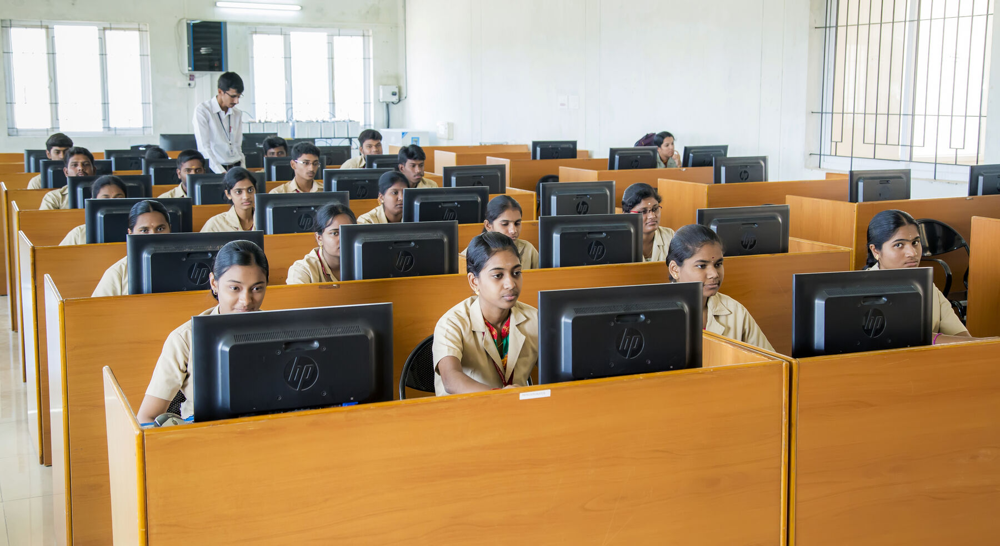

- Home
- Departments
- Information Technology
Information Technology
The Department of Information Technology provides quality education in core and emerging areas of computing. The curriculum focuses on programming, data structures, databases, networking, and modern technologies such as Artificial Intelligence, Cloud Computing, and Cybersecurity. The department emphasizes practical learning, innovation, and industry collaboration to develop competent IT professionals.
Vision
To become a Centre of Excellence in Information Technology education and research by developing competent professionals with technical expertise, innovation skills, and ethical values to meet global industry and societal needs.
Mission
- M1: To provide strong theoretical and practical knowledge in core and emerging areas of Information Technology.
- M2: To adopt innovative teaching and learning practices that prepare students to be industry-ready professionals.
- M3: To encourage research, innovation, and entrepreneurship among students and faculty.
Degree Offered
- B.Tech. Information Technology
Teaching Faculty
Professors/Assistant Professors
- Ms. K.Jayanthi M.E., (HOD)
- Ms. V. Suvetha M.E.(Assistant Professor)
- Ms. R.Umamageswari M.E.(Assistant Professor)
- Mr. V.Arun B.E., (Lab Techinician)
Non-Teaching Faculty
The Department provides high quality learning environment, in terms of inspiring teachers, State-of-the-art facilities, sharing experience, widening the knowledge horizon, interacting with experts from academic and industry and facilitating the student in the process of growth in the computer field. The Department aims to inculcate profound knowledge and skill in the areas of Computer Hardware and Software Developments. It offers excellent training in Computer Hardware and Software through state-of-the-art practices in teaching methodology. Department aims to produce globally competitive ComputerSoftware professionals in emerging areas of Technology. The environment provides opportunities to students to do research with world class amenities in Computer Laboratory Computer Science and Engineering Learning is made ease through industrial visits to congregate the professional commitments.

There are currently seven laboratories with the department namely
- Python Laboratory
- Data Science Laboratory
- Object Oriented Programming Laboratory
- Data Science and Analytics Laboratory
- Data Structures and Algorithms Laboratory
- Operating Systems Laboratory
- Database Management Systems Laboratory
The Department provides high quality learning environment, in terms of inspiring teachers, world class facilities, sharing experience, widening the knowledge horizon, interacting with experts from academic and industry and facilitating the student in the process of growth in the computer field. Department organize guest lectures and workshop with hands on training experience. As part of training, department conducts training on value added courses and technical training courses for our students. To have knowledge on latest technology we have different forums for students and a half yearly magazine released every semester to showcase their talents. To kindle young minds and to improve their managerial skills intra and inner college symposiums are conducted.
PROGRAMME EDUCATIONAL OBJECTIVES
- Demonstrate technical competence with analytical and critical thinking to understand and meet the diversified requirements of industry, academia and research.
- Engineering knowledge: Apply the knowledge of mathematics, science, engineering fundamentals, and an engineering specialization to the solution of complex engineering problems.
- Problem analysis: Identify, formulate, review research literature, and analyze complex engineering problems reaching substantiated conclusions using first principles of mathematics, natural sciences, and engineering sciences
- Design/development of solutions: Design solutions for complex engineering problems and design system components or processes that meet the specified needs with appropriate consideration for the public health and safety, and the cultural, societal, and environmental considerations.
- Conduct investigations of complex problems: Use research-based knowledge and research methods including design of experiments, analysis and interpretation of data,and synthesis of the information to provide valid conclusions.
- Modern tool usage: Create, select, and apply appropriate techniques, resources, and modern engineering and IT tools including prediction and modeling to complex engineering activities with an understanding of the limitations.
- The engineer and society: Apply reasoning informed by the contextual knowledge to assess societal, health, safety, legal and cultural issues and the consequent responsibilities relevant to the professional engineering practice.
- Environment and sustainability: Understand the impact of the professional engineering solutions in societal and environmental contexts, and demonstrate the knowledge of, and need for sustainable development.
- Ethics: Apply ethical principles and commit to professional ethics and responsibilities and norms of the engineering practice.
- Individual and team work: Function effectively as an individual, and as a member or leader in diverse teams, and in multidisciplinary settings.
- Communication: Communicate effectively on complex engineering activities with the engineering community and with society at large, such as, being able to comprehend and write effective reports and design documentation, make effective presentations, and give and receive clear instructions.
- Project management and finance: Demonstrate knowledge and understanding of the engineering and management principles and apply these to one’s own work, as a member and leader in a team, to manage projects and in multidisciplinary environments.
- Life-long learning: Recognize the need for, and have the preparation and ability to engage in independent and life-long learning in the broadest context of technological change.
- Evolve IT based efficient domain specific processes for effective decision making in several domains such as business and governance domains
- Arrive at actionable Foresight, Insight, hindsight from data for solving business and engineering problems
- Create, select and apply the theoretical knowledge of AI and Data Analytics along with practical industrial tools and techniques to manage and solve wicked societal problems
- Develop data analytics and data visualization skills, skills pertaining to knowledge acquisition, knowledge representation and knowledge engineering, and hence be capable of coordinating complex projects.
- Able to carry out fundamental research to cater the critical needs of the society through cutting edge technologies of AI.
PROGRAMME OUTCOMES
PROGRAM SPECIFIC OBJECTIVES (PSOs)
Technical Quiz
- MA3354-Discrete Mathematics
- CS3353 - C Programming and Data Structure
- CS3351-Digital Principles and Computer Organization
- CS3352-Foundations of Data Science
- CS3301-Data Structures
- CS3391-Object Oriented Programming
- CS3591-Computer Networks
- CS3501-Compiler Design
- CB3491-Cryptography and Cyber Security
- CS3551-Distributed Computing
- CCS334-Big Data Analytics
- MX3084-Disaster Risk Reduction and Management
- GE3791-Human Values and Ethics
- CME365 / Renewable Energy Technologies
- GE3752/Total Quality Management
- OFD351/Holistic Nutrition